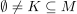
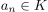
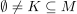
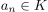
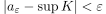
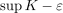
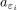
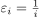
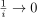

Konvergenz gegen das Supremum / Infimum
1. Satz
Sei  ein Vollständiger metrischer Raum und  eine beschränkte Teilmenge.
Dann existiert eine Folge , welche gegen das Supremum/Infimum konvergiert.
ein Vollständiger metrischer Raum und  eine beschränkte Teilmenge.
Dann existiert eine Folge , welche gegen das Supremum/Infimum konvergiert.
2. Beweis
o.B.d.A. für das Supremum:
Aufgrund der Vollständigkeit und Beschränktheit existiert nach dem Supremumsaxiom ein Supremum.
Sei  , so existiert ein , so dass gilt:
, so existiert ein , so dass gilt:

1
da sonst  eine bessere obere Schranke wäre.
Man wähle dann z.B. , so dass gilt  und da  konvergiert also auch  und damit die ganze Folge
und damit die ganze Folge